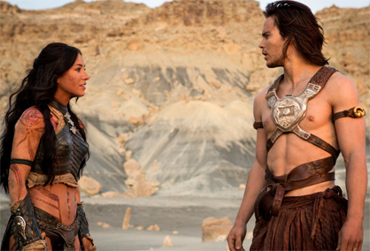
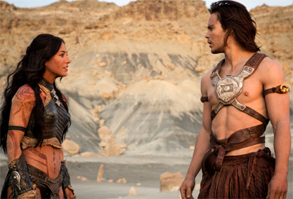

John Carter
A sweeping action-adventure set on the mysterious and exotic planet of Barsoom (Mars). John Carter is a war-weary, former military captain who's inexplicably transported to Mars and reluctantly becomes embroiled in an epic conflict. It's a world on the brink of collapse, and Carter rediscovers his humanity when he realizes the survival of Barsoom and its people rests in his hands.
 See The Action
See The Action
Rated: PG-13
Released: March 9, 2012
John Carter
A sweeping action-adventure set on the mysterious and exotic planet of Barsoom (Mars). John Carter is a war-weary, former military captain who's inexplicably transported to Mars and reluctantly becomes embroiled in an epic conflict. It's a world on the brink of collapse, and Carter rediscovers his humanity when he realizes the survival of Barsoom and its people rests in his hands.
Rated: PG-13
Released: March 9, 2012
See The Action
Characters & Cast
Director
Voice Actor
- Willem Defoe - Tars Tarkas
- Thomas Haden Church - Tal Hajus
- Samantha Morton - Sola
Actor
- Taylor Kitsch - John Carter
- Lynn Collins - Dejah Thoris
- James Purefoy - Kantos Kan
- Mark Strong - Matai Shang
- Willem Dafoe - Tars Tarkas
- Ciaran Hinds - Tardos Mors
- Dominic West - Sab Than
Rated: PG-13
Released: March 9, 2012
 
